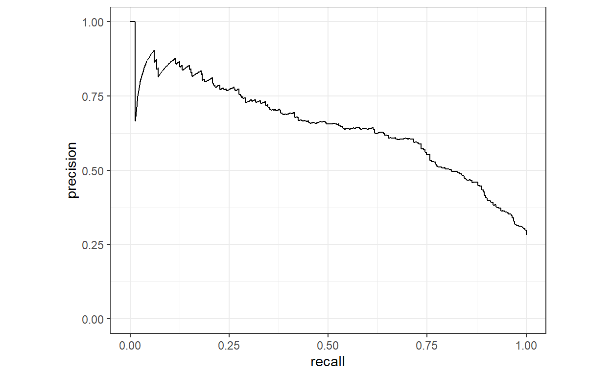

I’ve been collecting a few notes on using the tidymodels workflow for modelling, and thought it might be worth sharing them here. More for personal reference than anything, but someone might find my ramblings useful!
For demonstration purposes I’m going to use the credit_data dataset from the modeldata package. This is a fairly simple data set that doesn’t require too much wrangling to get going.
library(modeldata)
library(tidymodels)
library(tidyverse)
library(doParallel)
library(probably)
library(gt)
data("credit_data")
glimpse(credit_data)
Rows: 4,454
Columns: 14
$ Status <fct> good, good, bad, good, good, good, good, good, go…
$ Seniority <int> 9, 17, 10, 0, 0, 1, 29, 9, 0, 0, 6, 7, 8, 19, 0, …
$ Home <fct> rent, rent, owner, rent, rent, owner, owner, pare…
$ Time <int> 60, 60, 36, 60, 36, 60, 60, 12, 60, 48, 48, 36, 6…
$ Age <int> 30, 58, 46, 24, 26, 36, 44, 27, 32, 41, 34, 29, 3…
$ Marital <fct> married, widow, married, single, single, married,…
$ Records <fct> no, no, yes, no, no, no, no, no, no, no, no, no, …
$ Job <fct> freelance, fixed, freelance, fixed, fixed, fixed,…
$ Expenses <int> 73, 48, 90, 63, 46, 75, 75, 35, 90, 90, 60, 60, 7…
$ Income <int> 129, 131, 200, 182, 107, 214, 125, 80, 107, 80, 1…
$ Assets <int> 0, 0, 3000, 2500, 0, 3500, 10000, 0, 15000, 0, 40…
$ Debt <int> 0, 0, 0, 0, 0, 0, 0, 0, 0, 0, 0, 0, 2500, 260, 0,…
$ Amount <int> 800, 1000, 2000, 900, 310, 650, 1600, 200, 1200, …
$ Price <int> 846, 1658, 2985, 1325, 910, 1645, 1800, 1093, 195…First, I’ll split the sample into training and testing sets using rsample. As well as create v-fold cross-validation set for use in the tuning step later.
set.seed(122)
credit_data <- credit_data %>%
drop_na(Status)
# initial split
split <- initial_split(credit_data, prop = 0.75, strata = "Status")
# train/test sets
train <- training(split)
test <- testing(split)
# cross validation set
folds <- vfold_cv(train, v = 5)
Next, I’ll set up the recipe using recipies. As well as defining the formula for the model, I’ve created two preprocessing steps:
rec <- recipe(Status ~ ., data = train) %>%
step_bagimpute(Home, Marital, Job, Income, Assets, Debt) %>%
step_dummy(Home, Marital, Records, Job, one_hot = T)
Now I’ll prepare the model specification using parsnip. Here I’m using an xgboost model and specify the parameters I want to tune using Bayesian optimisation. The mtry parameter requires one additional step to finalise the range of possible values (because it depends on the number of variables in the data and a suitable range of values to test can’t be estimated without that information).
mod <- boost_tree(
trees = 1000,
min_n = tune(),
learn_rate = tune(),
loss_reduction = tune(),
sample_size = tune(),
mtry = tune(),
tree_depth = tune()
) %>%
set_engine("xgboost") %>%
set_mode("classification")
params <- parameters(mod) %>%
finalize(train)
In this step I’ve bundled all the above steps into a workflow. This avoids the need to use the juice, bake and prep functions (which I never quite got my head around…!).
xgboost_wflow <- workflow() %>%
add_recipe(rec) %>%
add_model(mod)
Now we are ready to OPTIMISE. I’m going to use an iterative search through Bayesian optimisation to predict what parameters to try next (as opposed to a grid search where we need to specific parameters values in advance).
First I set up some addition works so the tests can be run in parallel, and then use the tune_bayes() function to set up the tuning. Here I’ve decided to:
options(tidymodels.dark = TRUE)
cl <- makePSOCKcluster(8)
registerDoParallel(cl)
tuned <- tune_bayes(
object = xgboost_wflow,
resamples = folds,
param_info = params,
iter = 30,
metrics = metric_set(pr_auc),
initial = 10,
control = control_bayes(
verbose = TRUE,
no_improve = 10,
seed = 123
)
)
After a little while, we’re done! The top combinations were:
show_best(tuned, "pr_auc")%>%
select(1:7, 11) %>%
gt()
| mtry | min_n | tree_depth | learn_rate | loss_reduction | sample_size | .metric | std_err |
|---|---|---|---|---|---|---|---|
| 14 | 13 | 4 | 1.949228e-02 | 1.295324e-10 | 0.2703632 | pr_auc | 0.01525507 |
| 1 | 13 | 4 | 1.615862e-02 | 3.036423e-03 | 0.8919163 | pr_auc | 0.01816570 |
| 13 | 5 | 12 | 1.057048e-05 | 3.710341e-09 | 0.5714647 | pr_auc | 0.02226760 |
| 11 | 23 | 14 | 2.847187e-02 | 6.473076e-08 | 0.2472379 | pr_auc | 0.01866750 |
| 10 | 5 | 12 | 3.553680e-02 | 1.867881e-01 | 0.3068261 | pr_auc | 0.01438201 |
Now we can create our final model using these parameters.
xgboost_wkflow_tuned <- finalize_workflow(
xgboost_wflow,
select_best(tuned, "pr_auc")
)
Finally we can fit the model.
final_res <- last_fit(
xgboost_wkflow_tuned,
split
)
stopCluster(cl)
With our model in hand we can make some predictions to evaluate performance
preds <- final_res %>%
collect_predictions()
Now we can use the yardstick package to evaluate how the model performed.
conf_mat(preds, Status, .pred_class)
Truth
Prediction bad good
bad 152 57
good 161 743preds %>%
gain_curve(Status, .pred_bad) %>%
autoplot()
preds %>%
pr_curve(Status, .pred_bad) %>%
autoplot()

hmmm… That confusion matrix doesn’t look too great. Quite a large number “good” predictions were actually “bad” (false negatives). Maybe when can improve the class prediction by using probably.
Here we use threshold_perf() to evaluate different thresholds to make our class predictions. One methods to determine the “best” cut point is to use the j-index (maximum value of 1 when there are no false positives and no false negatives).
threshold_data <- preds %>%
threshold_perf(Status, .pred_bad, thresholds = seq(0.2, 1, by = 0.0025))
max_j_index_threshold <- threshold_data %>%
filter(.metric == "j_index") %>%
filter(.estimate == max(.estimate)) %>%
pull(.threshold)
preds_new <- preds %>%
mutate(new_class_pred = factor(ifelse(.pred_bad >= max_j_index_threshold, "bad", "good"),
levels = c("bad", "good")))
max_j_index_threshold
[1] 0.2725Now we have a new prediction based on our new threshold of vs the default threshold of 0.50. We can compare the performance on a range of different binary classification metrics by calling summay() on the conf_mat() object for both the old and new predicted classes.
summary(conf_mat(preds, Status, .pred_class)) %>%
select(-.estimator) %>%
rename(old_threshold = .estimate) %>%
bind_cols(.,
summary(conf_mat(preds_new, Status, new_class_pred)) %>%
select(.estimate) %>%
rename(new_threshold = .estimate)) %>%
gt() %>%
fmt_number(columns = c(2, 3),
decimals = 3) %>%
tab_style(
style = cell_fill(color = "indianred3"),
locations = cells_body(columns = 3,
rows = new_threshold < old_threshold)
) %>%
tab_style(
style = cell_fill(color = "springgreen3"),
locations = cells_body(columns = 3,
rows = new_threshold > old_threshold)
) %>%
cols_align(align = "center")
| .metric | old_threshold | new_threshold |
|---|---|---|
| accuracy | 0.804 | 0.786 |
| kap | 0.461 | 0.516 |
| sens | 0.486 | 0.773 |
| spec | 0.929 | 0.791 |
| ppv | 0.727 | 0.592 |
| npv | 0.822 | 0.899 |
| mcc | 0.477 | 0.526 |
| j_index | 0.414 | 0.564 |
| bal_accuracy | 0.707 | 0.782 |
| detection_prevalence | 0.188 | 0.367 |
| precision | 0.727 | 0.592 |
| recall | 0.486 | 0.773 |
| f_meas | 0.582 | 0.670 |
Lowering the threshold to .27 seems to have had a positive impact on quite a few of the binary classification metrics. There is always going to be a trade off between maximising some metrics over others, and will of course depend on what you are trying to achieve with your model.
…and that is a very quick tour of tidymodels! There are obviously some additional steps you would want to carry out out in the “real” world. You’d probably want to compare a range of different models and maybe do some additional feature engineering based on the data you have, but the code above is a good initial starting point for a tidymodels orientated workflow.
Thanks for reading!
Text and figures are licensed under Creative Commons Attribution CC BY 4.0. The figures that have been reused from other sources don't fall under this license and can be recognized by a note in their caption: "Figure from ...".
For attribution, please cite this work as
Fisher (2020, May 23). Data, Code & Coffee: {tidymodels} workflow with Bayesian optimisation. Retrieved from https://hfshr.xyz/posts/2020-05-23-tidymodel-notes/
BibTeX citation
@misc{fisher2020{tidymodels},
author = {Fisher, Harry},
title = {Data, Code & Coffee: {tidymodels} workflow with Bayesian optimisation},
url = {https://hfshr.xyz/posts/2020-05-23-tidymodel-notes/},
year = {2020}
}